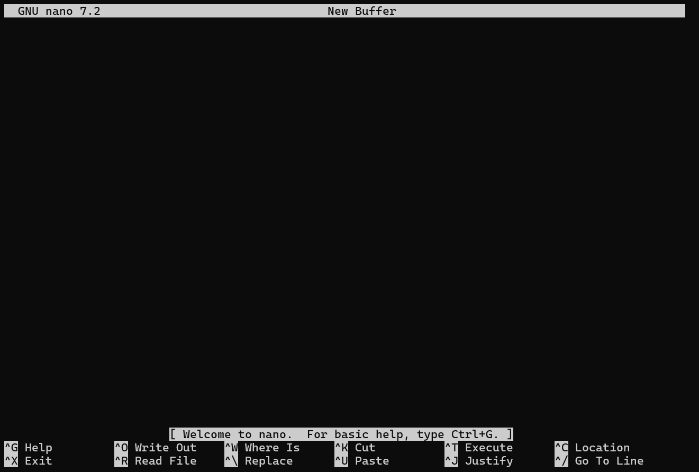

Using file/directories commands we learned in Week 1: Create the following directory and file structure.
~/. #Your Home Directory or other starting folder
└── D43_Unix_R_Class
├── Books
│ ├── R
│ └── Unix
├── Cheatsheets
│ └── My_Notes.md
├── Questions
│ └── CommandPromptIssue.txt
├── R
│ └── Lessons
│ ├── Lesson_1
│ ├── Lesson_2
│ └── Lesson_3
└── Unix
└── Lessons
├── Lesson_1
│ └── Exercises_1-10.txt
├── Lesson_2
│ └── Exercises_1-4.txt
├── Lesson_3
│ └── Exercises_1-6.txt
└── Lesson_4
~/. #Your Home Directory or other starting folder
└── D43_Unix_R_Class
├── Books
│ ├── R
│ └── Unix
├── Cheatsheets
│ └── My_Notes.md
├── Questions
│ └── CommandPromptIssue.txt
├── R
│ └── Lessons
│ ├── Lesson_1
│ ├── Lesson_2
│ └── Lesson_3
└── Unix
└── Lessons
├── Lesson_1
│ └── Exercises_1-10.txt
├── Lesson_2
│ └── Exercises_1-4.txt
├── Lesson_3
│ └── Exercises_1-6.txt
└── Lesson_4
A: Single directory at a time
$ mkdir D43_Unix_R_Class $ cd D43_Unix_R_Class $ mkdir Books $ mkdir Books/R $ mkdir Books/Unix $ mkdir Cheatsheets $ mkdir Questions $ touch Cheatsheets/My_Notes.md $ touch Questions/CommandPromptIssue.txt $ mkdir R $ mkdir R/Lessons $ mkdir R/Lessons/Lesson_1 $ mkdir R/Lessons/Lesson_2 $ mkdir R/Lessons/Lesson_2 $ mkdir Unix $ mkdir Unix/Lessons $ mkdir Unix/Lessons/Lesson_1 $ mkdir Unix/Lessons/Lesson_2 $ mkdir Unix/Lessons/Lesson_3 $ mkdir Unix/Lessons/Lesson_4 $ touch Unix/Lessons/Lesson_1/Exercises_1-10.txt $ touch Unix/Lessons/Lesson_2/Exercises_1-4.txt $ touch Unix/Lessons/Lesson_3/Exercises_1-6.txt $ tree #or $ ls -R $ history
$ mkdir D43_Unix_R_Class
$ cd D43_Unix_R_Class
$ mkdir Books
$ mkdir Books/R
$ mkdir Books/Unix
$ mkdir Cheatsheets
$ mkdir Questions
$ touch Cheatsheets/My_Notes.md
$ touch Questions/CommandPromptIssue.txt
$ mkdir R
$ mkdir R/Lessons
$ mkdir R/Lessons/Lesson_1
$ mkdir R/Lessons/Lesson_2
$ mkdir R/Lessons/Lesson_2
$ mkdir Unix
$ mkdir Unix/Lessons
$ mkdir Unix/Lessons/Lesson_1
$ mkdir Unix/Lessons/Lesson_2
$ mkdir Unix/Lessons/Lesson_3
$ mkdir Unix/Lessons/Lesson_4
$ touch Unix/Lessons/Lesson_1/Exercises_1-10.txt
$ touch Unix/Lessons/Lesson_2/Exercises_1-4.txt
$ touch Unix/Lessons/Lesson_3/Exercises_1-6.txt
$ tree
#or
$ ls -R
$ historyB. Multiple Directories using mkdir -p option
$ mkdir -p D43_Unix_R_Class/Books/Unix $ mkdir D43_Unix_R_Class/Books/R $ mkdir -p D43_Unix_R_Class/Cheatsheets $ mkdir -p D43_Unix_R_Class/Questions $ mkdir -p D43_Unix_R_Class/R/Lessons/Lesson_1 $ mkdir D43_Unix_R_Class/R/Lessons/Lesson_2 $ mkdir D43_Unix_R_Class/R/Lessons/Lesson_3 $ mkdir -p D43_Unix_R_Class/Unix/Lessons/Lesson_1 $ mkdir D43_Unix_R_Class/Unix/Lessons/Lesson_2 $ mkdir D43_Unix_R_Class/Unix/Lessons/Lesson_3 $ mkdir D43_Unix_R_Class/Unix/Lessons/Lesson_4 $ touch D43_Unix_R_Class/Cheatsheets/My_Notes.md $ touch D43_Unix_R_Class/Questions/CommandPromptIssue.txt $ touch D43_Unix_R_Class/Unix/Lessons/Lesson_1/Exercises_1-10.txt $ touch D43_Unix_R_Class/Unix/Lessons/Lesson_2/Exercises_1-4.txt $ touch D43_Unix_R_Class/Unix/Lessons/Lesson_3/Exercises_1-6.txt $ tree #or $ ls -R $ history
$ mkdir -p D43_Unix_R_Class/Books/Unix
$ mkdir D43_Unix_R_Class/Books/R
$ mkdir -p D43_Unix_R_Class/Cheatsheets
$ mkdir -p D43_Unix_R_Class/Questions
$ mkdir -p D43_Unix_R_Class/R/Lessons/Lesson_1
$ mkdir D43_Unix_R_Class/R/Lessons/Lesson_2
$ mkdir D43_Unix_R_Class/R/Lessons/Lesson_3
$ mkdir -p D43_Unix_R_Class/Unix/Lessons/Lesson_1
$ mkdir D43_Unix_R_Class/Unix/Lessons/Lesson_2
$ mkdir D43_Unix_R_Class/Unix/Lessons/Lesson_3
$ mkdir D43_Unix_R_Class/Unix/Lessons/Lesson_4
$ touch D43_Unix_R_Class/Cheatsheets/My_Notes.md
$ touch D43_Unix_R_Class/Questions/CommandPromptIssue.txt
$ touch D43_Unix_R_Class/Unix/Lessons/Lesson_1/Exercises_1-10.txt
$ touch D43_Unix_R_Class/Unix/Lessons/Lesson_2/Exercises_1-4.txt
$ touch D43_Unix_R_Class/Unix/Lessons/Lesson_3/Exercises_1-6.txt
$ tree
#or
$ ls -R
$ historyC. Multiple Directories using mkdir -p single command and touch single command
$ mkdir -p D43_Unix_R_Class/Books/Unix D43_Unix_R_Class/Books/R D43_Unix_R_Class/Cheatsheets D43_Unix_R_Class/Questions D43_Unix_R_Class/R/Lessons/Lesson_1 D43_Unix_R_Class/R/Lessons/Lesson_2 D43_Unix_R_Class/R/Lessons/Lesson_3 D43_Unix_R_Class/Unix/Lessons/Lesson_1 D43_Unix_R_Class/Unix/Lessons/Lesson_2 D43_Unix_R_Class/Unix/Lessons/Lesson_3 D43_Unix_R_Class/Unix/Lessons/Lesson_4 $ touch D43_Unix_R_Class/Cheatsheets/My_Notes.md D43_Unix_R_Class/Questions/CommandPromptIssue.txt D43_Unix_R_Class/Unix/Lessons/Lesson_1/Exercises_1-10.txt D43_Unix_R_Class/Unix/Lessons/Lesson_2/Exercises_1-4.txt D43_Unix_R_Class/Unix/Lessons/Lesson_3/Exercises_1-6.txt $ tree #or $ ls -R $ history
$ mkdir -p D43_Unix_R_Class/Books/Unix D43_Unix_R_Class/Books/R D43_Unix_R_Class/Cheatsheets D43_Unix_R_Class/Questions D43_Unix_R_Class/R/Lessons/Lesson_1 D43_Unix_R_Class/R/Lessons/Lesson_2 D43_Unix_R_Class/R/Lessons/Lesson_3 D43_Unix_R_Class/Unix/Lessons/Lesson_1 D43_Unix_R_Class/Unix/Lessons/Lesson_2 D43_Unix_R_Class/Unix/Lessons/Lesson_3 D43_Unix_R_Class/Unix/Lessons/Lesson_4
$ touch D43_Unix_R_Class/Cheatsheets/My_Notes.md D43_Unix_R_Class/Questions/CommandPromptIssue.txt D43_Unix_R_Class/Unix/Lessons/Lesson_1/Exercises_1-10.txt D43_Unix_R_Class/Unix/Lessons/Lesson_2/Exercises_1-4.txt D43_Unix_R_Class/Unix/Lessons/Lesson_3/Exercises_1-6.txt
$ tree
#or
$ ls -R
$ historyWe learned about file permissions and how to set them using chmod command
Week 1 Review Quiz
secret.txt is in the folder .private on your computer and it contains your bank account information, what permission should you assign the file and the directory?Questions
rm -r D43_Unix_R_Class rm -rf *
rm -r D43_Unix_R_Class
rm -rf *a. File: rwxr--r-- Directory: rw-rw-rw- b. File: 600 Directory: 111 c. File: 400 Directory: 500 (File: Only You(read) Directory: Only you(read + execute) - Best
a. File: rwxr--r-- Directory: rw-rw-rw-
b. File: 600 Directory: 111
c. File: 400 Directory: 500 (File: Only You(read) Directory: Only you(read + execute) - Best
Unix is case sensitive;
Unix is case sensitive;Executable Permissions are required to be able to change into the directory
pwd
pwdThe directory /share/course/D43_Unix_R_Class is a _______. (Single choice)
Absolute Path - because it starts with /
The up-arrow key allows you to see the prior command you typed (Single choice)
True
In order to get to your Unix HOME directory, you can type: (Multiple choice)
cd
cd ~
cd .. # Only if you're in a directory directly below your home directory
Windows PowerShell is a Unix terminal (Single choice) *
False - PowerShell is a command-line shell and scripting language developed by Microsoft
Assignments are due (Single choice)
For this lesson, we're going to be using files from the D43_Unix.tar.gz file. This is a gzipped (compressed) tarball file, which is a file archive of multiple files. It is a 57.5MB file.
You can download it from: https://ucdavis.box.com/s/bctjh2zmvskf5ycozk75ci3h19vsproq
Once you've downloaded the file, move it to where you want to keep it on your Home directory. Then expand the file with the following command to decompress and unarchive the files into a folder called D43_Unix
$ tar zxvf D43_Unix.tar.gz
$ tar zxvf D43_Unix.tar.gzYou should now have a D43_Unix Folder with lots of files and folders.
In Lesson 1-4, we were mainly focused learning to navigate and organize the filesystem. We're now going to start to dive into some of the basic programs in Unix that make it such a powerful tool.
In this lesson, we're going to be introduced to Unix Streams, which is a fundamental piece of Unix programs. We'll also start to learn commands to view the contents of files. In the next few lessons, we'll start to practice linking these simple commands together to make some more complex tools.
What you see on your terminal screen is made up of three different streams of inputs/outputs.
| UNIX Stream | Description |
|---|---|
| STDIN | This is the input we feed to the terminal. |
| STDOUT | The standard output from programs or commands that we issue. |
| STDERR | Error messages from programs or commands |
We'll see more of these in the next few lessons, and we'll see how to capture or redirect them.
A couple commands, you'll see used from time to time:
| Command | Description |
|---|---|
| file <file> | Provides information about a file |
| echo "<text>" | Print text to terminal |
| Command | Description |
|---|---|
| cat <file> | Print file contents to stdout |
| less <file> | View file by page |
| head <file> | Output first 10 lines of file |
| tail <file> | Output last 10 lines of file |
catWhile the cat command may seem simple at first glance, it is a very versatile command that lets you view, concatenate, create, copy, merge, and manipulate file contents.
We're going to just cover the basics of using cat to view, contcatenate, create, and copy.
For more indepth examples, please see: https://www.geeksforgeeks.org/cat-command-in-linux-with-examples/
cat prints the contents of the terminal screen/STDOUT.
$ cat D43_Unix/Documents/Page1.md # First Page This is my document and I'm going to write some things here #This is some Code I'd like to run ls -alh sleep 10 | Column1 | Column 2 | | --------- | --------- | | Row 1 | Row 1 | | Row 2 | Row 2 Info|
$ cat D43_Unix/Documents/Page1.md
# First Page
This is my document and I'm going to write some things here
#This is some Code I'd like to run
ls -alh
sleep 10
| Column1 | Column 2 |
| --------- | --------- |
| Row 1 | Row 1 |
| Row 2 | Row 2 Info|
Use caution when using cat to print long files. It doesn't pause, but rather will print the complete document to the terminal. If it's a long file you may want to use CTRL+c to terminate the process.
$ cat D43_Unix/Books/Elements\ of\ Style.txt # You'll want to use CTRL+C to exit out of this long book
$ cat D43_Unix/Books/Elements\ of\ Style.txt
# You'll want to use CTRL+C to exit out of this long book lessless lets you efficiently view and search within files interactively. Like cat it allows you to view the contents of the file, but it does so in an interactive manner - it only displays a page at a time and let's you scroll forward and backward.
$ less D43_Unix/Books/Elements\ of\ Style.txt
$ less D43_Unix/Books/Elements\ of\ Style.txtTo quit out of less you need to type q
less| Key | Description |
|---|---|
| Space / PgDn | Scroll down one page at a time |
| b / PgUp | Scroll up one page at a time |
| g | Go to the beginning |
| G | Go to the end |
| q | Quit or exit out of less |
| /<pattern> | Search for a pattern |
| n | Find next pattern match |
| N | Find previous pattern match |
| <number>g | Goto line <number> |
For more in-depth options and commands in less, please see the man pages.
A lot of times you'll come across a gzipped (compressed) file that you want to view. If you use cat or less on these files, you'll see a lot of garbled output. This is because the compressed file is not a text file but rather a binary compressed text file.
Because it's so common to deal with compressed text files, Unix provides versions of many utilities that handle the conversion seamlessly. Typically, the commands are prefixed with just a z.
zless displays compressed gzip text files just like less
zcat prints compressed gzip text files just like cat
$ zless D43_Unix/Reference/Clinvar/Clinvar_20241111.vcf.gz $ zcat D43_Unix/Reference/Clinvar/Clinvar_20241111.vcf.gz
$ zless D43_Unix/Reference/Clinvar/Clinvar_20241111.vcf.gz
$ zcat D43_Unix/Reference/Clinvar/Clinvar_20241111.vcf.gzD43_Unix/Reference/Gencode/gencode.v47.primary_assembly.basic.annotation.gff3.gzHint: Based on the suffix of .gz, this is a gzipped file. Be certain to use a the appropriate command for gzipped files.
head or tailhead and tail displays 10 lines at the beginning or end of the file, respectively.
If you want to display more than 10 lines, you use the option -n <number> to display a given number of lines.
$ head D43_Unix/Reference/Homo_sapiens_assembly38.fasta.fai $ tail D43_Unix/Reference/Homo_sapiens_assembly38.fasta.fai
$ head D43_Unix/Reference/Homo_sapiens_assembly38.fasta.fai
$ tail D43_Unix/Reference/Homo_sapiens_assembly38.fasta.faiThere are some very basic commands that can help you process files.
| Command | Description |
|---|---|
| wc <file> | Return the number of lines, words, and bytes in a file |
| cut [options] <file> | Print specific column(s) from a file |
| sort <file> | Sort a file by values in column(s) |
| uniq <file> | Return only uniq lines from a file |
wc Counting lines, words, and bytes for file$ wc D43_Unix/Books/Elements\ of\ Style.txt 2757 16956 108509 D43_Unix/Books/Elements of Style.txt
$ wc D43_Unix/Books/Elements\ of\ Style.txt
2757 16956 108509 D43_Unix/Books/Elements of Style.txt| Options | Description |
|---|---|
| -l | Print out Line counts |
| -w | Print out word counts |
| -m | Print out character counts |
cut - Print out selected fields or section from each line.cut requires you to provide a set of fields to extract. The option for this is -f<column(s) numbers separated by comma> . If you need a range of columns, you can specify the range with the starting column number, a dash, and then ending column number.
$ head D43_Unix/Data/penguins.tsv rowid species island bill_length_mm bill_depth_mm flipper_length_mm body_mass_g sexyear 1 Adelie Torgersen 39.1 18.7 181 3750 male 2007 2 Adelie Torgersen 39.5 17.4 186 3800 female 2007 3 Adelie Torgersen 40.3 18 195 3250 female 2007 4 Adelie Torgersen NA NA NA NA NA 2007 5 Adelie Torgersen 36.7 19.3 193 3450 female 2007 6 Adelie Torgersen 39.3 20.6 190 3650 male 2007 7 Adelie Torgersen 38.9 17.8 181 3625 female 2007 8 Adelie Torgersen 39.2 19.6 195 4675 male 2007 9 Adelie Torgersen 34.1 18.1 193 3475 NA 2007 $ cut -f2-3,8 D43_Unix/Data/penguins.tsv Chinstrap Dream female Chinstrap Dream male Chinstrap Dream male Chinstrap Dream female
$ head D43_Unix/Data/penguins.tsv
rowid species island bill_length_mm bill_depth_mm flipper_length_mm body_mass_g sexyear
1 Adelie Torgersen 39.1 18.7 181 3750 male 2007
2 Adelie Torgersen 39.5 17.4 186 3800 female 2007
3 Adelie Torgersen 40.3 18 195 3250 female 2007
4 Adelie Torgersen NA NA NA NA NA 2007
5 Adelie Torgersen 36.7 19.3 193 3450 female 2007
6 Adelie Torgersen 39.3 20.6 190 3650 male 2007
7 Adelie Torgersen 38.9 17.8 181 3625 female 2007
8 Adelie Torgersen 39.2 19.6 195 4675 male 2007
9 Adelie Torgersen 34.1 18.1 193 3475 NA 2007
$ cut -f2-3,8 D43_Unix/Data/penguins.tsv
Chinstrap Dream female
Chinstrap Dream male
Chinstrap Dream male
Chinstrap Dream femalecut to extract the following columns: rowid, bill_length_mm, body_mass_g, and year from the file D43_Unix/Data/penguins.tsvBy default, the delimiter used to determine the columns is a tab character. If you need to change the delimiter, you use the -d <delimiter> option.
$ cut -d , -f1,2,3 D43_Unix/Data/Penguins.csv
$ cut -d , -f1,2,3 D43_Unix/Data/Penguins.csvcut to extract the columns: Park Code, Park Name, and State from the file D43_Unix/Datasets/parks.csvsort allows you to sort columns either alphabetically or numerically.By default sort will sort any file by line.
$ sort D43_Unix/Data/Penguins.tsv 1 Adelie Torgersen 39.1 18.7 181 3750 male 2007 10 Adelie Torgersen 42 20.2 190 4250 NA 2007 100 Adelie Dream 43.2 18.5 192 4100 male 2008
$ sort D43_Unix/Data/Penguins.tsv
1 Adelie Torgersen 39.1 18.7 181 3750 male 2007
10 Adelie Torgersen 42 20.2 190 4250 NA 2007
100 Adelie Dream 43.2 18.5 192 4100 male 2008By default sort sorts the columns alphabetically.
To select which columns to sort on and how we want to sort that column, we need to use one or more instances of the -k option.
$ sort -k2,2 -k8,8 D43_Unix/Data/Penguins.tsv
$ sort -k2,2 -k8,8 D43_Unix/Data/Penguins.tsvTo sort numerically, you can put a n after the selection. Default is (ascending order)
$ sort -k4,4n D43_Unix/Data/Penguins.tsv
$ sort -k4,4n D43_Unix/Data/Penguins.tsvTo sort numerically (descending), you can put r after the selection
$ sort -k4,4nr D43_Unix/Data/Penguins.tsv
$ sort -k4,4nr D43_Unix/Data/Penguins.tsvD43_Unix/Data/penguins.tsv first by sex and then numerically ascending order by body_mass_guniq outputting unique lines.We won't cover this to much, in this section but we'll use it a lot more in the next lesson.
uniq takes the contents of a file or what is passed to it and returns only the unique items.
If you want to output the duplicate items from the file, use uniq -d
There are a lot of different editors. If you're a developer, you may use vi, vim, or emacs. But these are way more than we need.
One of the simplest interactive text editors in Unix is called nano
| Command | Description |
|---|---|
| nano <file> | A simple Terminal editor |
To create a new file, you can just run nano

You'll notice at the bottom of the page, it provides some shortcuts. ^ is the same as CTRL key
| Nano Shortcut | Description |
|---|---|
| ^G is CTRL+g | Display the Help Screen |
| ^X is CTRL+x | Exit (Prompt to Save) |
| ^O is CTRL+o | Save file |
See Help for more shortcuts.
To open a specific file for editing, you can supply the filename you want to read into nano
$ nano D43_Unix/Private/MyJournal.txt
$ nano D43_Unix/Private/MyJournal.txtTo exit nano remember, you'll have to use the CTRL+x to get back to the command prompt.
D43_Unix/Private/MyJournal.txt in nano and write a joke or sentence. Then save the file, exit nano and view the file with less to confirm that you've made changes.